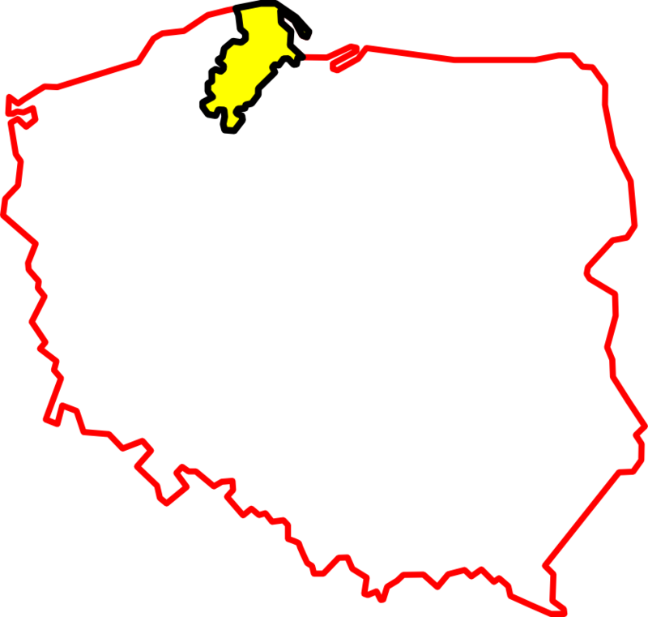
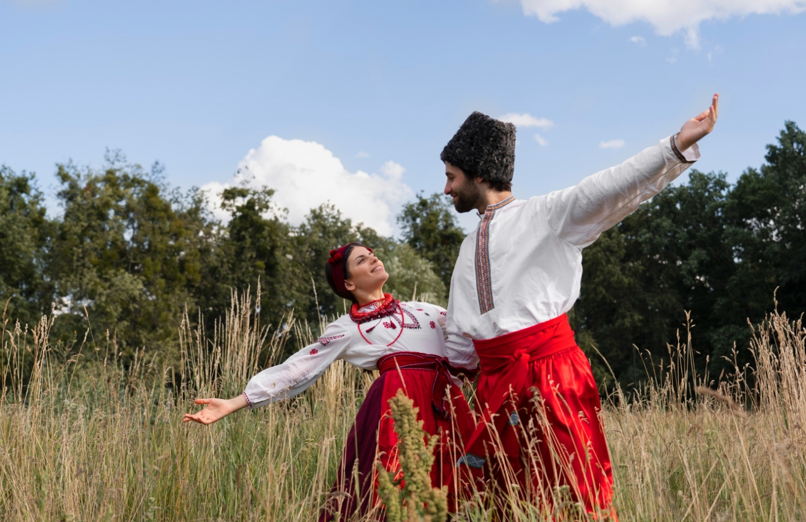

Kashuby (kaszub. Kaszëbë ou Kaszëbskô) - région culturelle du nord de la Pologne, faisant partie de la Poméranie de Gdansk. Elle est habitée, entre autres, par des Cachoubes (Poméraniens autochtones).
Le kachoube a le statut de langue régionale en Pologne depuis 2005 et est parlé quotidiennement par 87,6 milliers de personnes.
 